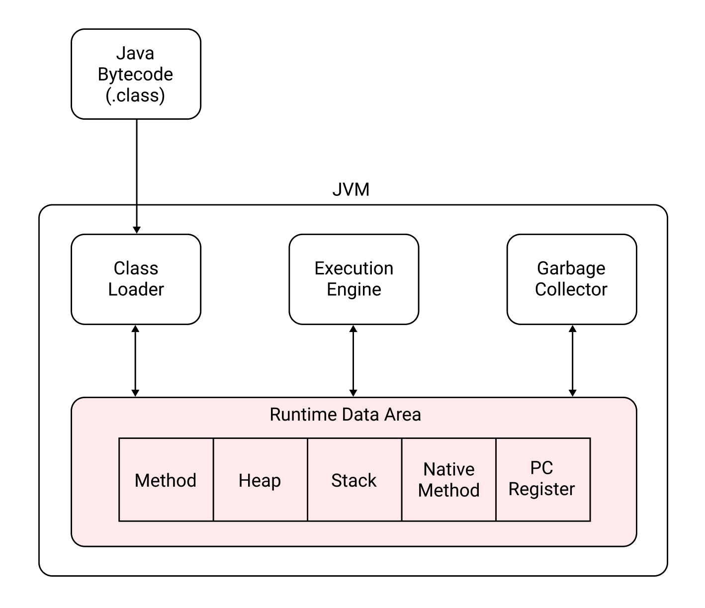

[Java] JVM 메모리 구조
JVM 메모리 구조
JVM의 메모리 구조는 다음과 같다.

(1) Class Loader
Class Loader는 런타임에 동적으로 Java Bytecode를 로드하고 링크하여 Runtime Data Area에 배치한다.
(2) Execution Engine
Execution Engine는 Runtime Data Area에 배치된 Java Bytecode를 실행한다.
(3) Garbage Collector
Class의 Instance는 Runtime Data Area의 Stack 영역에 생성된다. Garbage Collector는 참조되지 않는 Instance를 제거하는 역할을 한다.
(4) Runtime Data Area
Class Loader가 로드한 Java Bytecode는 Runtime Data Area에 배치된다. Runtime Data Area는 크게 다섯 가지 영역으로 구분된다.
Method: 모든 스레드가 공유하는 영역. 메소드, 클래스, 인터페이스, Static 변수, 상수가 배치된다.Heap: 모든 스레드가 공유하는 영역. 클래스의 인스턴스나 배열이 생성된다.Stack: 지역변수, 메서드의 매개변수가 배치된다.Native Method: C/C++ 같이 Java 외의 언어로 작성된 코드가 배치된다.PC Register: Program Counter Register의 줄임말로 Thread마다 존재한다. 현재 Thread에서 실행 중인 명령어의 주소를 저장한다.